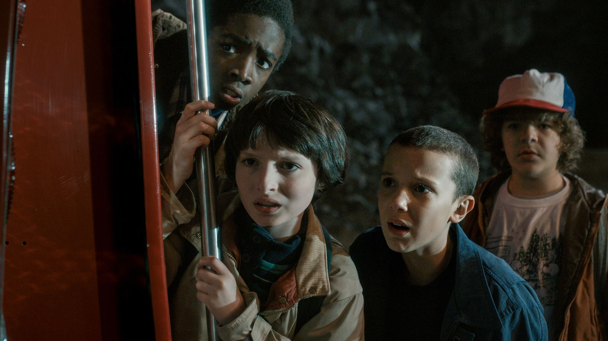
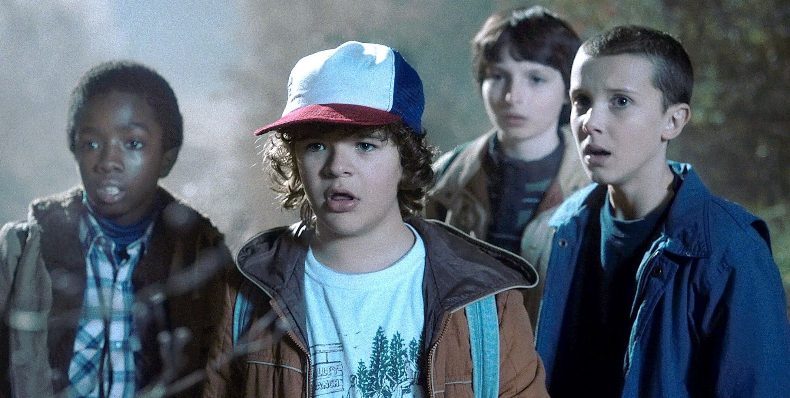
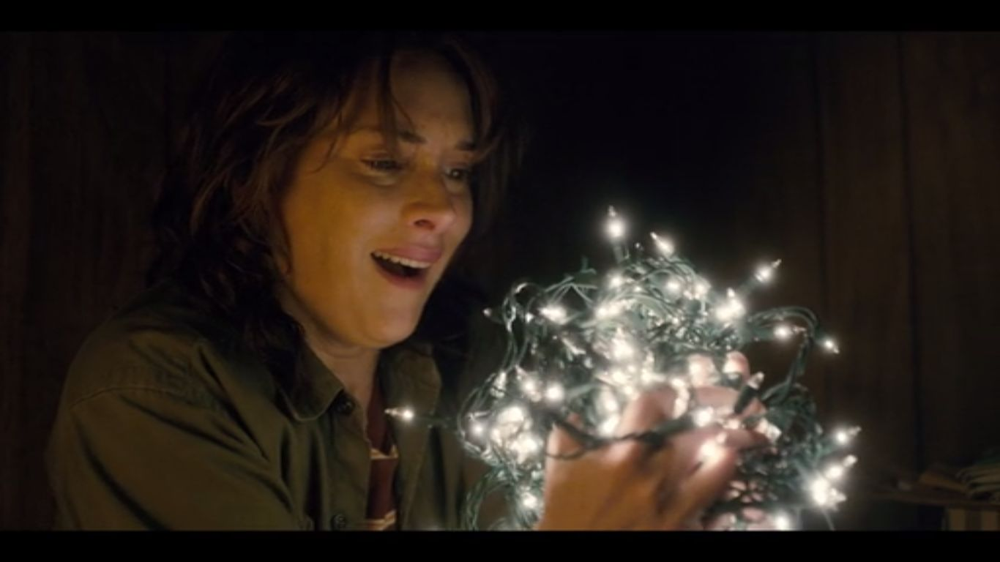
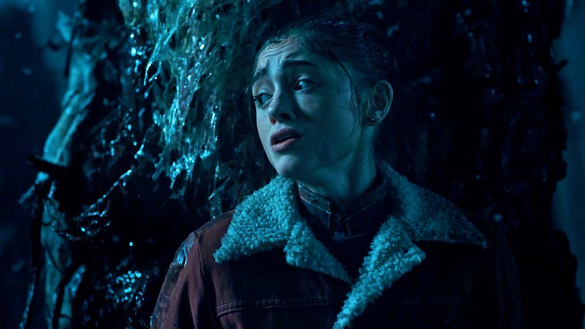

Stranger Things is an American science fiction-horror web television series created, written, directed and co-executive produced by the Duffer Brothers, as well as co-executive-produced by Shawn Levy and Dan Cohen. The first season stars Winona Ryder, David Harbour, Finn Wolfhard, in recurring roles. The second season will see Schnapp and Keery promoted to series regulars, along with the addition of Sadie Sink, and Dacre Montgomery. The first season focuses on the disappearance of a young boy, and the appearance of a psychokinetic girl, who helps his friends in their search, while the boy's older brother, his mother, and the town police chief start their own investigations.
Premise
Stranger Things is set in the fictional rural town of Hawkins, Indiana during the 1980s. The nearby Hawkins National Laboratory ostensibly performs scientific research for the US Department of Energy, but secretly does experiments into the paranormal, which start to affect the unknowing residents of Hawkins in calamitous ways.
Episodes
Season 1(2016)
Season one starts in November 1983, when the researchers as the Hawkins lab open a rift to the "Upside-Down", an alternate dimension, and a monster from it inadvertently escapes, abducting members of the town to the Upside-Down to feed upon. The series' narrative focuses on the abduction of Will Byers by the monster and the trauma it causes to his mother Joyce and the town's police chief Jim Hopper as they search for him and try to find answers. It also centers on Will's friends, Mike, Dustin, and Lucas, and their friendship with a young psychokinetic girl Eleven, who had escaped from being a test subject at the laboratory, and their efforts to find Will.
The boys learn the girl's name is Eleven, which is tattooed on her arm; they nickname her "El". Scientists from the laboratory find a substance oozing from the walls of Joyce's home. At Mike's home, El recognizes Will in a photo. She uses psychokinesis to lock the door and prevent Dustin and Lucas from informing Mike's parents about her. Searching for Will, Hopper discovers a torn piece of El's hospital gown outside the laboratory grounds. Nancy goes with her friend Barb to a party at her boyfriend Steve's house.
Barb wakes up in an empty pool near a dark creature. She tries to climb out in vain, but is dragged down. Joyce strings Christmas lights around her home, establishing communication with Will, who can turn them on and off. Hopper and his deputies research Dr. Martin Brenner, the laboratory, and a woman named Terry Ives who claimed her daughter was taken by scientists.
El proves to the boys that Will is still alive by making contact through Mike's walkie-talkie. Using their science teacher Mr. Clarke's powerful ham radio to contact Will, El and the boys overhear Will talking to his mother, saying he is afraid. Simultaneously, Joyce hears him through her living room wall and tears the wallpaper, revealing a flesh-like substance with Will on the other side. She breaks the wall with an axe, but this opens only to her front porch.
Lucas notices the distortion and confronts her. Mike defends her, and he and Lucas fight, which ends with El telekinetically flinging Lucas off Mike. Lucas recovers and runs away. In the woods, Nancy and Jonathan find a wounded deer, which the creature attacks and drags away. Following the blood trail, Nancy crawls through a passage to the Upside-Down world and discovers the creature feasting upon the deer. While in the portal, the creature notices Nancy and attacks her.
The next day, Nancy and Jonathan resolve to kill the monster and purchase supplies from an army surplus store. After a fist fight with Steve, Jonathan is arrested after he inadvertently assaults an officer. Joyce and Hopper decide to investigate together after Hopper discovers his home has been bugged. They track down Terry Ives; she is El's biological mother, who underwent MKUltra training while pregnant. Eleven (born Jane), was taken by Brenner.
Interrogated by Brenner, Hopper gives up El's location in exchange for neutrality and access to the gate. He and Joyce enter in Hazmat suits and discover the creature's nest, where they find Will unconscious with a slug-like creature in his esophagus. Nancy and Jonathan booby-trap the Byers' home, then cut their hands to attract the creature with their blood. Steve arrives, intending to apologize to Jonathan about their fight.
El pins it against a wall, says goodbye to Mike, and both vanish. Will is hospitalized and reunited with his mother, brother, and friends. Hopper is reluctantly picked up by a black car. One month later, Nancy has gotten back together with Steve, and both are good friends with Jonathan. Hopper leaves Eggo waffles and other food in a box in the woods.
Season 2(2017)
The second season will take place around Halloween of 1984,[24] about a year after the events of the first season, and will explore the "bigger mythology" of Will's disappearance, according to the Duffers.[25] Levy described the second season as being about the "determined desire to return to normalcy in Hawkins" for Will, his family, his friends, and the other residents in the town affected by the events.[26] Will suffers from a type of "some sort of post-traumatic stress disorder" from his time in the Upside-Down, and Joyce is attempting to help him deal with it, while trying to date her old classmate Bob to cover up her own emotions.